Visão geral
Resumo dos principais indicadores de vendas, com filtros de canal, status, período e idioma e navegação para todas as páginas.
Dashboard de vendas bilíngue construído sobre Oracle OCI. Acompanha faturamento, pedidos, custos, lucro, clientes e metas em Português e Inglês, com moeda e formatação adaptadas a cada idioma.
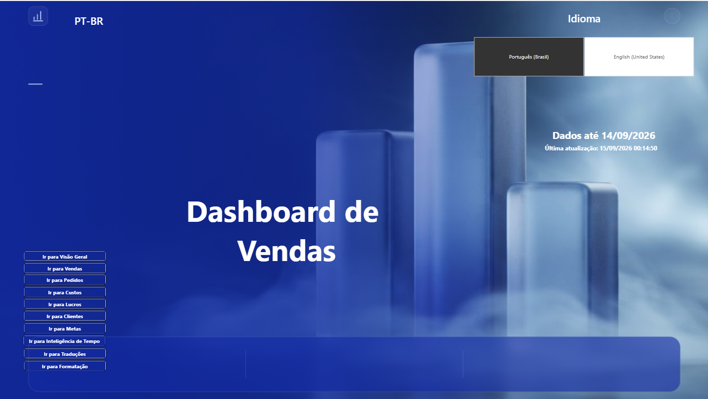
O projeto reúne em um único relatório Power BI o acompanhamento de vendas, pedidos, custos, lucro, clientes e metas, com idioma, moeda e formatação definidos pela seleção do usuário.
O Oracle Sales BI parte de um banco Oracle OCI e organiza os dados em um modelo dimensional, com tabela fato no grão de item de pedido, dimensões de tempo, cliente, produto, canal, vendedor e status, além de uma tabela de metas por vendedor.
Todo o relatório existe em Português (PT-BR) e Inglês (EN-US) no mesmo arquivo. Títulos, rótulos, filtros e eixos dinâmicos mudam com o idioma, e a moeda acompanha a escolha: reais no PT-BR e dólares no EN-US, convertidos pela cotação PTAX do Banco Central do dia da venda.
O relatório foi publicado no Power BI Service, com atualização diária agendada e a cotação PTAX obtida por conexão Web via gateway.
O principal desafio foi manter um único modelo e um único conjunto de páginas, com textos, formatos e moeda adequados a leitores brasileiros e internacionais.
Evitar duas cópias do relatório: o mesmo modelo precisa servir a leitores em português e inglês, com textos, formatos numéricos e moeda adequados a cada um.
Tabelas de parâmetros, catálogo de traduções e grupos de cálculo trocam rótulos, dimensões, métricas, moeda e formatos conforme o idioma selecionado.
Cada página responde a uma pergunta específica (vendas, pedidos, custos, lucros, clientes, metas e tempo), com o mesmo layout, filtros e botões de navegação.
A análise percorre o caminho completo: bruto, descontos, cancelamentos, devoluções, líquido, custos, lucro e atingimento das metas.
Os indicadores cobrem o caminho entre a venda e o resultado, com comparações de período e metas para facilitar a leitura de variações e pontos de atenção.
Do bruto ao líquido, com waterfall que separa descontos, cancelamentos e devoluções.
Pedidos válidos, itens e ticket médio, com variação contra o mês e o ano anteriores.
Custo total, por pedido e por unidade, percentual sobre o faturamento e custo perdido.
Lucro total, por pedido e por unidade, margem e lucro perdido em cancelamentos e devoluções.
Clientes atendidos, faturamento por cliente, cliente top, concentração (Pareto) e mapa por região.
Meta, realizado, gap e atingimento por vendedor, equipe e região, com meta proporcional no mês parcial.
Mesmo período do ano anterior, acumulado no ano, média diária e sazonalidade mensal.
Quebra por 11 dimensões, como categoria, produto, canal e vendedor, escolhida pelo usuário.
Cada página responde a um conjunto específico de perguntas, mantendo a experiência visual consistente em toda a solução.
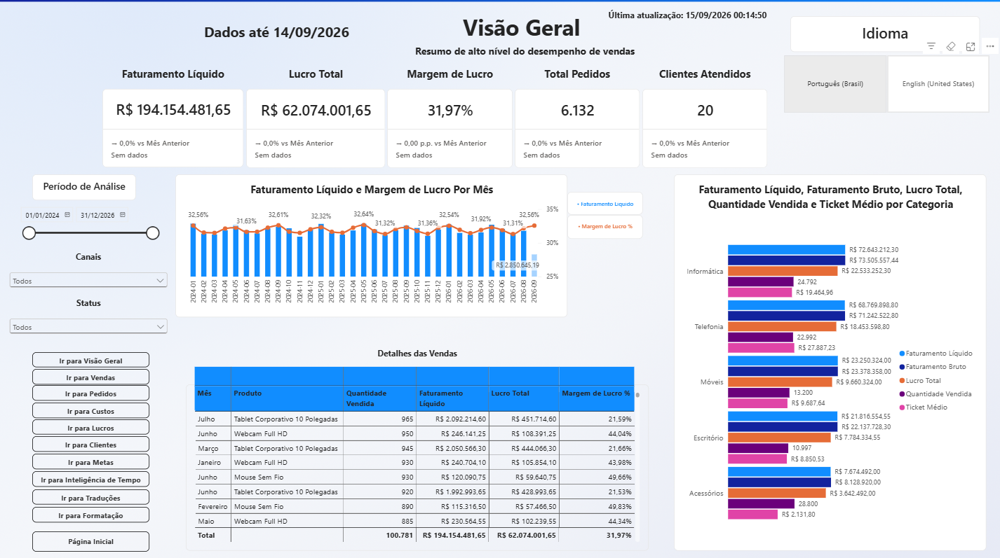
Resumo dos principais indicadores de vendas, com filtros de canal, status, período e idioma e navegação para todas as páginas.
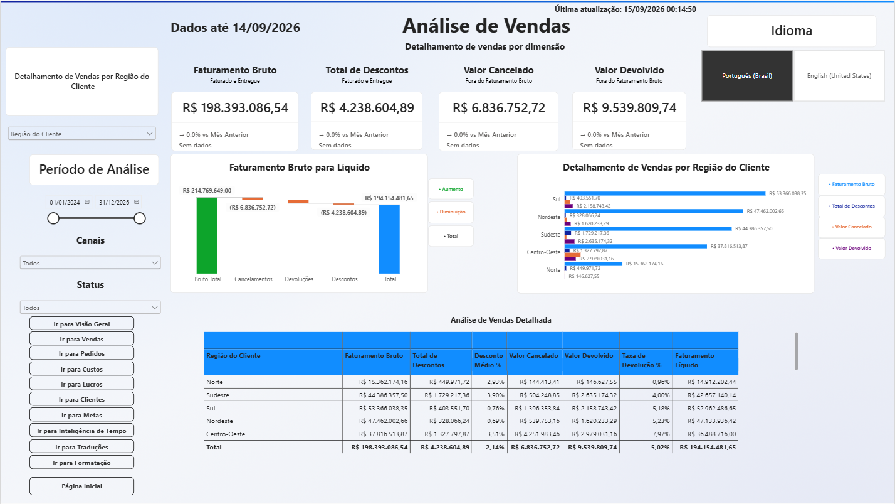
Passagem do faturamento bruto ao líquido em um waterfall bilíngue, e detalhamento por 11 dimensões escolhidas pelo usuário.
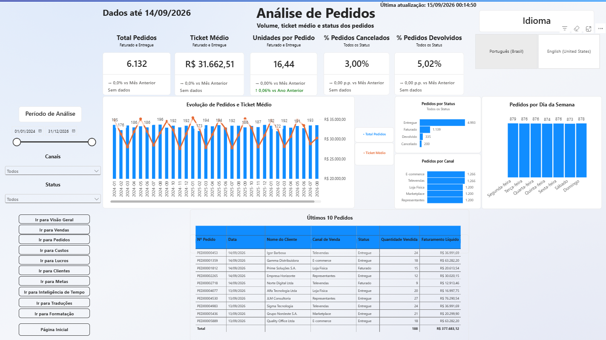
Volume de pedidos, ticket médio e evolução mensal, com recortes por status, canal e dia da semana.
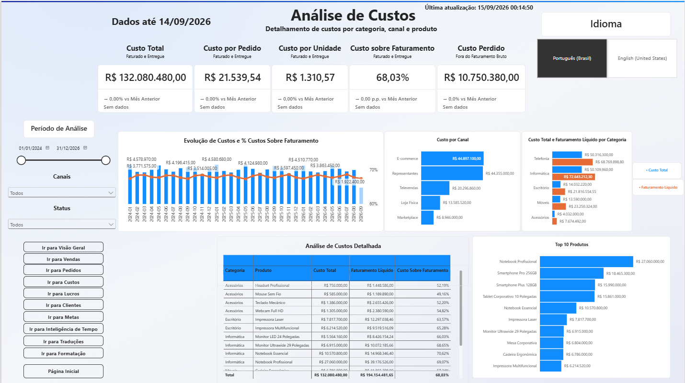
Custo total, custo por pedido e por unidade, peso sobre o faturamento e custos perdidos em cancelamentos e devoluções.
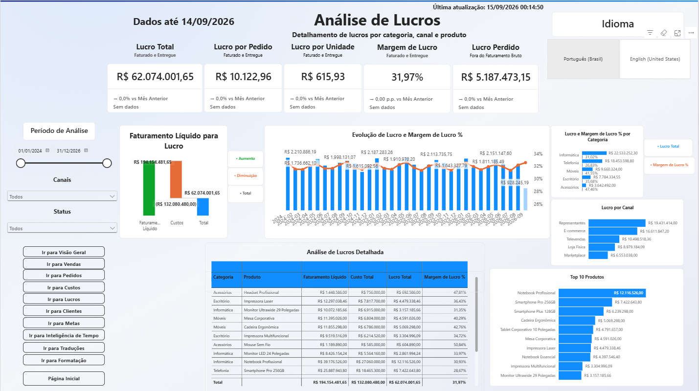
Lucro, margem e lucro perdido, do faturamento líquido ao resultado, por categoria, canal e produto.
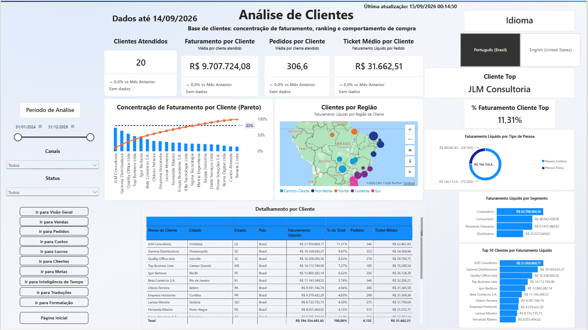
Concentração de faturamento em Pareto, ranking, segmentos e mapa de clientes por região.
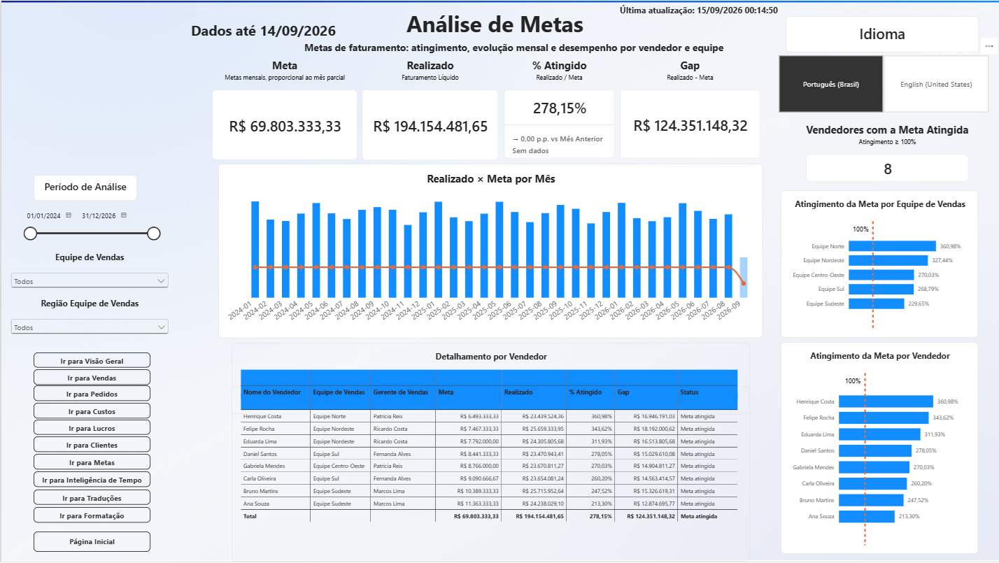
Meta, realizado e atingimento por vendedor, equipe e região, com evolução mensal e meta proporcional no mês parcial.
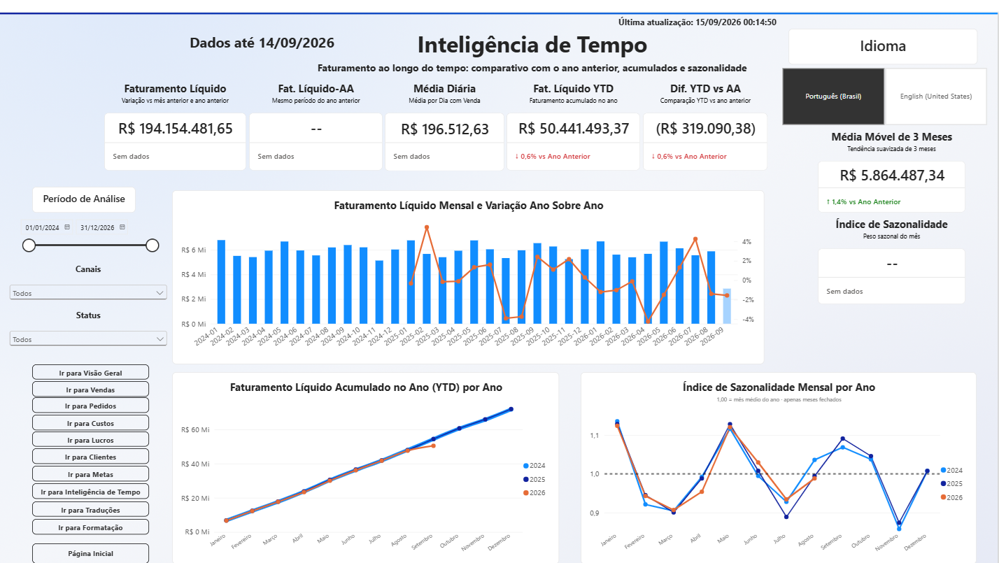
Comparativo com o mesmo período do ano anterior, acumulado no ano, média diária e sazonalidade.
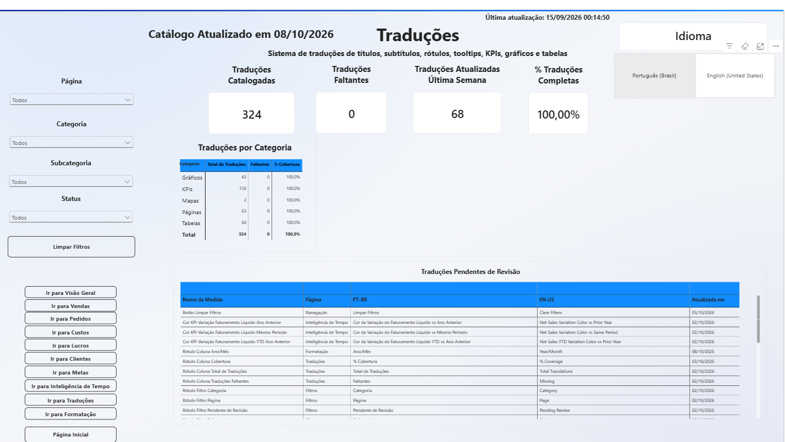
Catálogo de traduções do relatório, com filtros bilíngues e lista de itens pendentes de revisão.
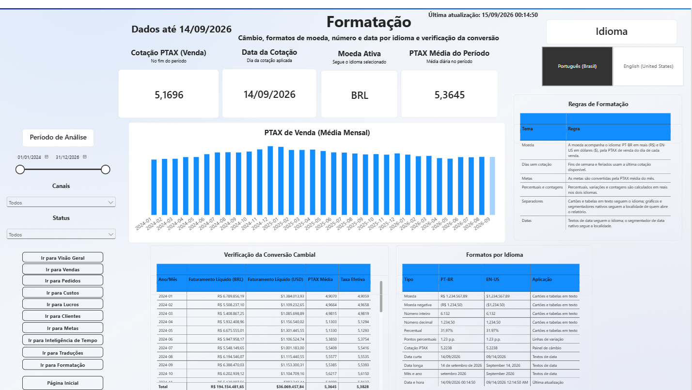
Painel de câmbio PTAX, verificação da conversão BRL/USD e regras de formatação por idioma.
Navegue pelas páginas, troque o idioma, aplique filtros e explore os indicadores de vendas diretamente nesta página.
A construção seguiu um fluxo de preparação, modelagem, criação de métricas, visualização e publicação com atualização automática.
Vendas, clientes, produtos, canais, vendedores e metas.
Tratamento dos dados e consulta da cotação PTAX do Banco Central.
Tabela fato, dimensões, parâmetros de campo, grupos de cálculo e medidas.
Publicação, gateway e atualização diária agendada.
O projeto combina preparação de dados, modelagem, cálculos analíticos, visualização, localização e publicação.
Relatório de 10 páginas com indicadores, gráficos, mapas, tooltips, navegação e slicers dinâmicos.
Variações e comparativos de período, meta proporcional, títulos dinâmicos e regras por status de venda.
Tratamento das fontes e consulta da cotação PTAX com a data no fuso de Brasília.
Origem dos dados e views de desempenho de vendedores usadas nas metas.
Modelo dimensional com fato no grão de item de pedido, dimensões e tabelas de apoio.
Waterfall, Pareto, colunas e linhas combinadas, rosca, barras e mapa.
Layout consistente, acabamento visual em padrão Figma e navegação entre páginas.
Publicação, gateway Enterprise e atualização diária agendada.
A localização vai além da tradução: o idioma define textos, dimensões, moeda e formatos em todas as páginas, a partir de um único modelo.
O desenvolvimento envolveu decisões técnicas, analíticas e visuais que ampliaram a qualidade do resultado final.
Parâmetros de campo, catálogo de traduções e grupos de cálculo evitam duplicar páginas e mantêm o relatório único.
Definir quais status entram em cada medida (faturado e entregue contra cancelado e devolvido) evita números diferentes para o mesmo conceito.
Períodos parciais e de tamanhos diferentes pedem regras próprias, como o período comparável e a meta proporcional do mês em andamento.
Um catálogo de traduções com itens pendentes de revisão e detecção de textos duplicados facilita a manutenção dos dois idiomas.
O projeto está concluído como estudo de caso, mas a arquitetura permite novas análises e funcionalidades.
O Oracle Sales BI reúne Oracle, SQL, Power Query, DAX, modelagem de dados e design de informação em uma solução de vendas completa e bilíngue.